•
Tek bir kelimeden yüzlerce cümlelik ders kitabı listelerine ve çok karakterli diyaloglara kadar tüm Arapça içeriklerinizi; tam hareke (i'rab) sadakati, otomatik Vakıf/Vasıl kuralları ve kendi özel referans sesinizi klonlama gücüyle stüdyo kalitesinde üretin.
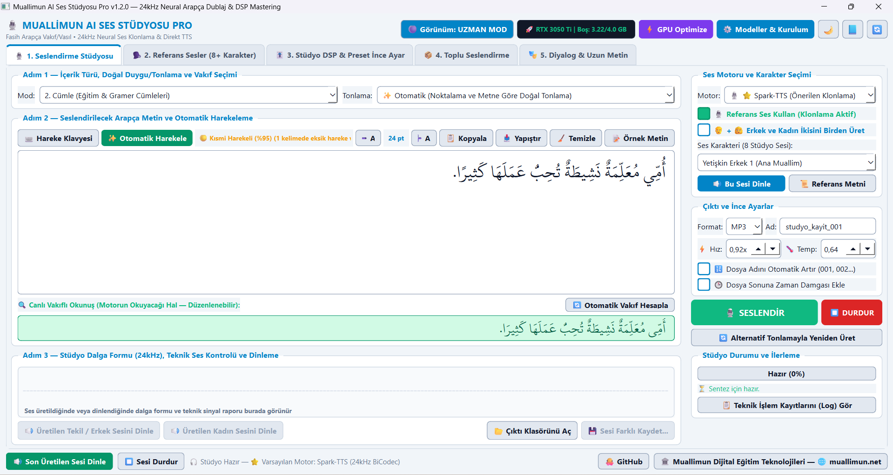
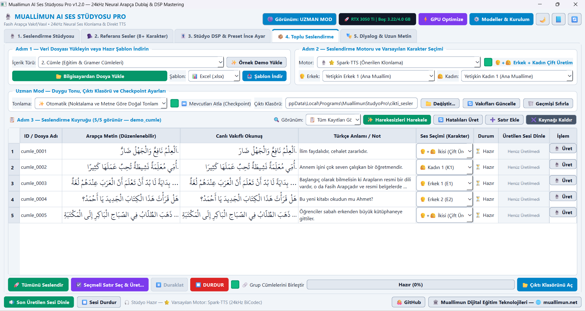
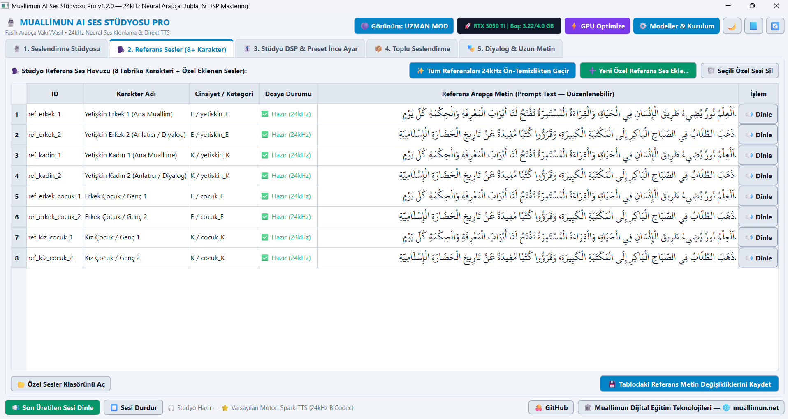
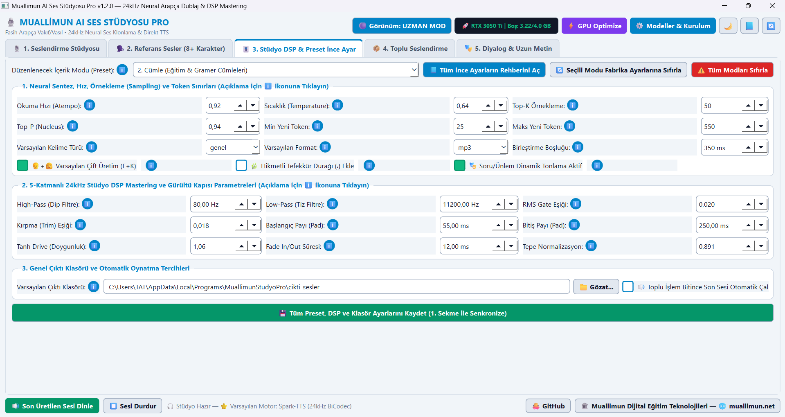
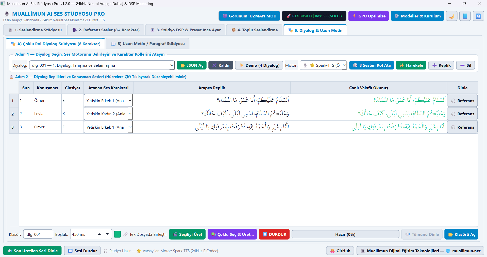
Standart TTS araçları tek seferde yalnızca bir cümleyi mekanik olarak okurken, Muallimun AI Ses Stüdyosu Pro bir ders kitabının tamamını yayın kalitesinde hazırlamanız için tasarlanmıştır.
Tek tek kopyala-yapıştır devri bitti! Excel (.xlsx), JSON, CSV veya TXT dosyanızdaki yüzlerce kelime, cümle, diyalog veya paragrafı sürükle-bırak ile yükleyip tek bir komutla seslendirin.
ses_dosyasi sütunundaki isimlerle kaydeder.1 - 50 satır aralığını üretin.Uygulama içinde hazır gelen 8 profesyonel stüdyo karakterine (Yetişkin Erkek/Kadın, Çocuk Erkek/Kız) ek olarak, kendi sesinizi veya beğendiğiniz bir spikerin sesini dakikalar içinde stüdyoya ekleyebilirsiniz.
.wav, .mp3, .flac, .ogg dosyalarını otomatik 24kHz'e dönüştürür.Teknik detaylarla uğraşmak istemeyen öğretmenler için Kolay Mod; sesin her frekansına ve hızına müdahale etmek isteyen içerik üreticileri için Uzman Mod bir arada sunulur.
ℹ️ Rehberleri: Her ayarın yanında ne işe yaradığını anlatan bilgi kartı.
Python, PyTorch, CUDA ve FFmpeg dahil tüm stüdyo bileşenleri tek bir kurulum dosyasında (Muallimun_Studyo_Pro_Setup.exe) birleştirilmiştir. Ek hiçbir kurulum gerektirmez.
Yardımcı ek paket veya .bin dosyası indirmeye gerek kalmadan, yalnızca aşağıdaki tek kurulum dosyasını indirip çift tıklayarak kurulumu tamamlayabilirsiniz.
cikti_sesler) ve özel referans seslerinize dokunmadan güvenle günceller.Muallimun_Studyo_Pro_Setup.exe dosyasına çift tıklayın.
Uygulamanın tüm ekranlarını ve özelliklerini gerçek ekran görüntüleriyle aşağıda adım adım inceleyebilirsiniz (Görselleri büyütmek için üzerlerine tıklayın).
Tek bir kelimeyi, gramer cümlesini veya atasözünü saniyeler içinde seslendirmek ve ses sinyal kalitesini denetlemek için kullanılan ana stüdyo ekranıdır:
كَثِيرًا → كَثِيرَا) yeşil kutuda anlık gösterir (Ekran 1).RMS: -15.7 dBFS) ve tepe seviyesini (Tepe: -1.5 dBFS) grafik üzerinde doğrular (Ekran 17).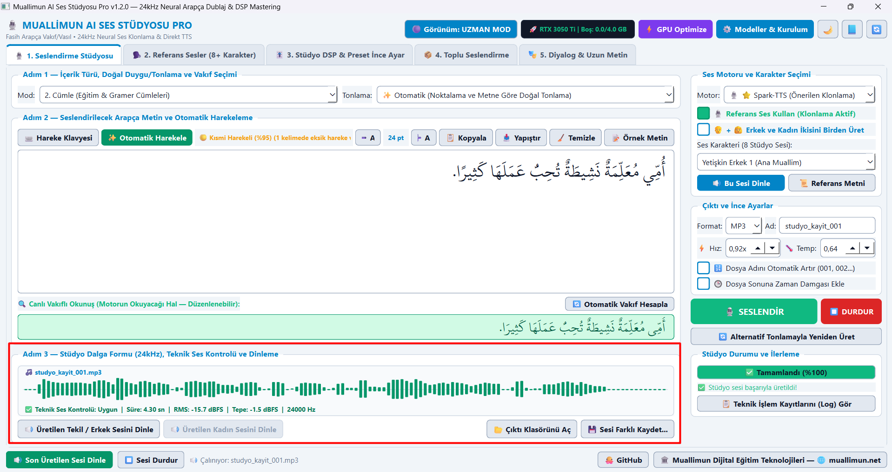
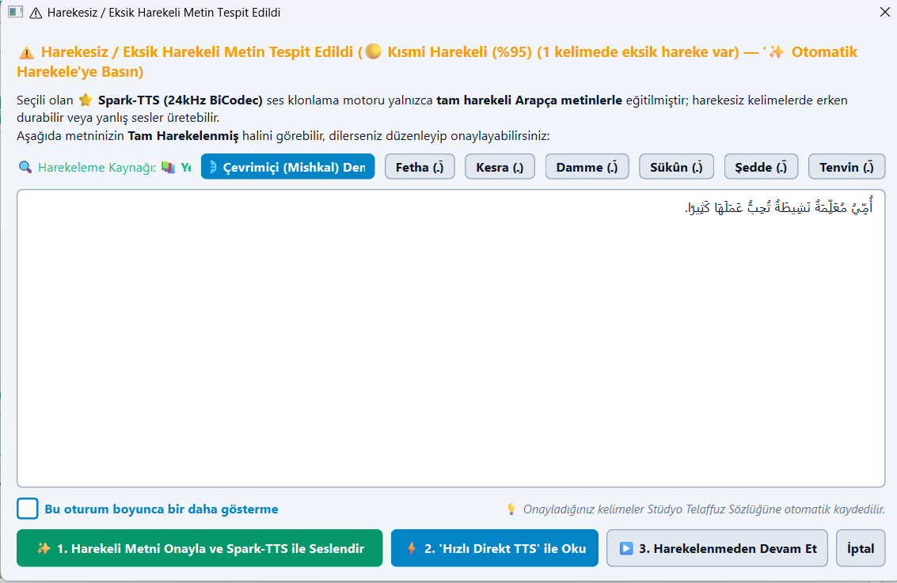
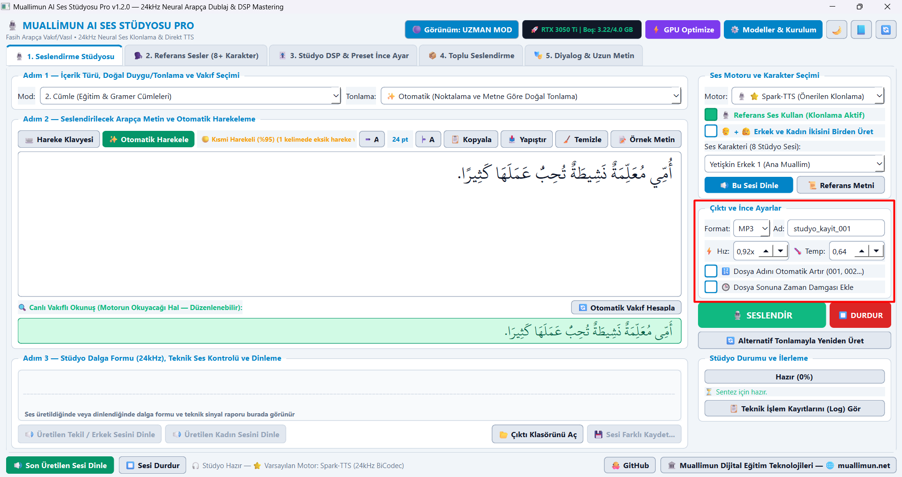
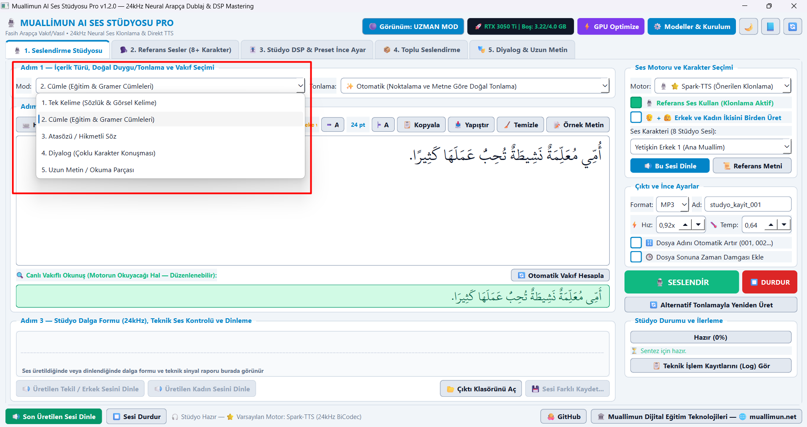
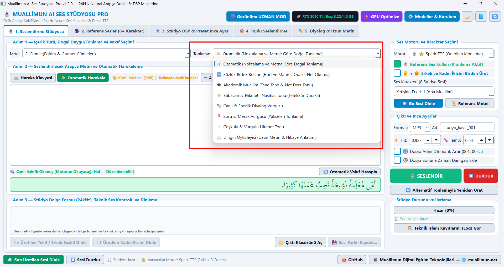
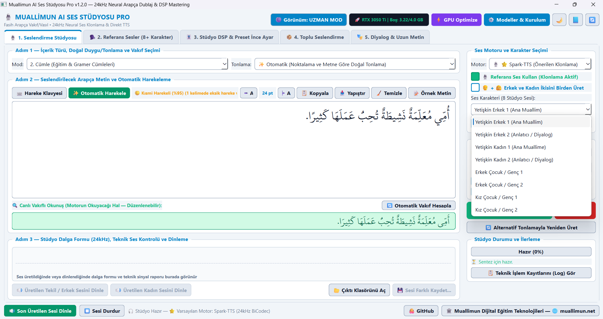
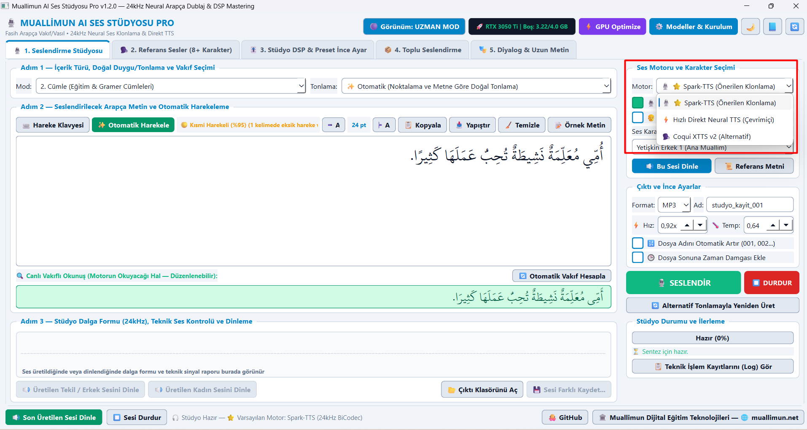
Diğer TTS araçlarında bulunmayan Toplu Seslendirme Kuyruğu (Ekran 4), bir ders kitabının veya sözlüğün tamamını tek seferde üretmenizi sağlar:
📥 Şablon İndir) indirip doldurun; ister butonla seçin ister doğrudan tablonun üzerine fareyle sürükleyip bırakın.E1, E2, K1, K2, İkisi) atayabilirsiniz.🔄 Hatalıları Üret) yeniden sentezleyin.2. Sekme (Ekran 2) üzerinden yerleşik 8 stüdyo karakterini dinleyebilir, yeşil ➕ Yeni Özel Referans Ses Ekle... butonuyla (Ekran 18) kendi referans sesinizi sisteme tanıtabilirsiniz:
.wav, .mp3, .flac, .ogg dosyasındaki aşırı uzun sessizlikler doğal nefes payına (220 ms) daraltılır ve 24kHz Mono PCM_16 WAV standardına dönüştürülür.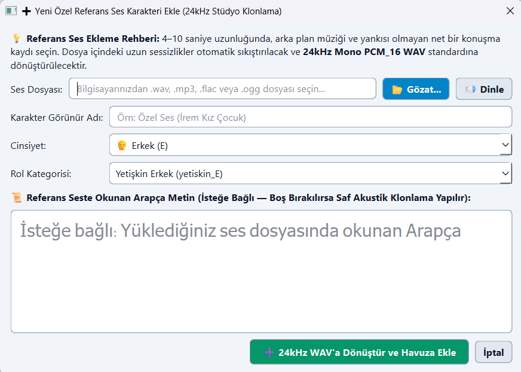
Üst bardaki 🟣 Görünüm: UZMAN MOD butonuna tıkladığınızda açılan 3. Sekme (Ekran 3), 5 içerik modunun her birine ait ses mühendisliği parametrelerini kalıcı olarak özelleştirmenizi sağlar:
80 Hz), Low-Pass tiz filtre (11200–11500 Hz), RMS Gate eşiği, Başlangıç/Bitiş nefes payları ve Tanh Drive doygunluğu.5. Sekme iki güçlü alt stüdyodan oluşur ve hem replikleri ayrı ayrı kaydeder hem de belirlediğiniz nefes boşluğuyla tek bir ses dosyası olarak birleştirir:
diyalog_tamami.mp3) tek seferde üretir.فِي، مِنْ، إِلَى، عَلَى) bölmeden doğal cümlelere ayırır; cümle cümle seslendirip tamami.mp3 olarak birleştirir.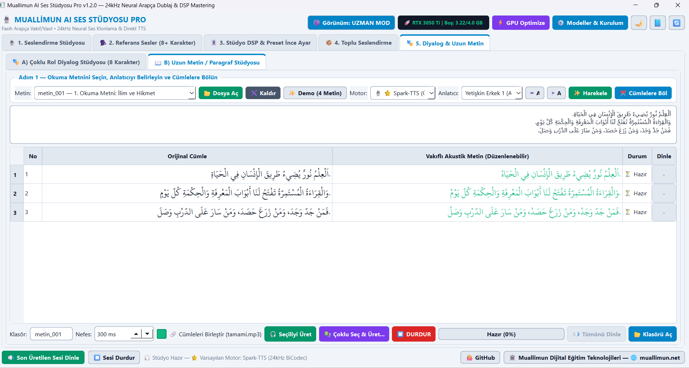
Üst bardaki ⚡ GPU Optimize ve ⚙️ Modeller & Kurulum butonlarıyla açılan yönetim pencereleri (Ekran 7, 8, 9 ve 10), sisteminizin her zaman tam performansta çalışmasını sağlar:
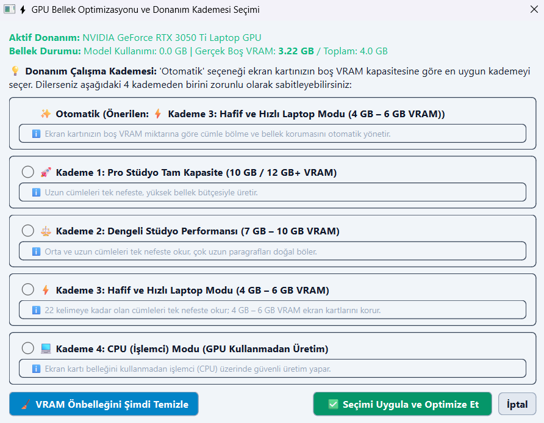
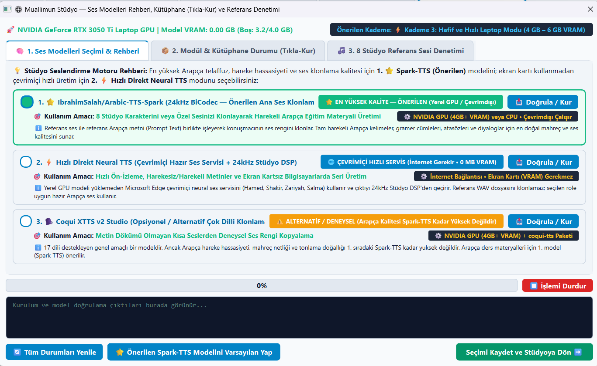
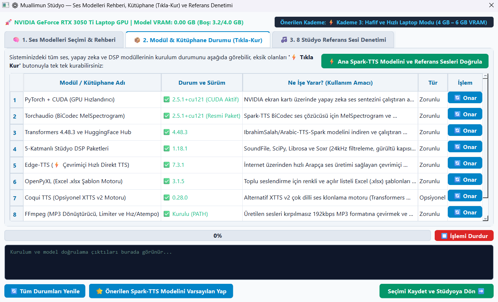
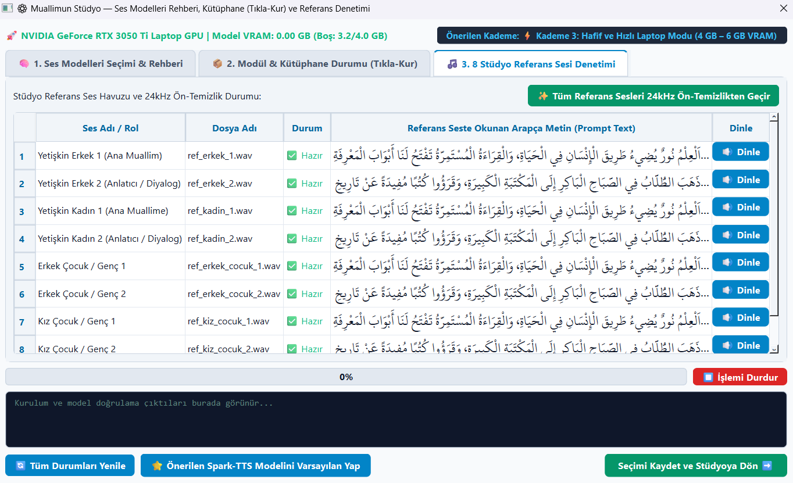
Excel (.xlsx), JSON veya CSV dosyalarınızı hazırlarken kullanabileceğiniz sütun adları ve 3 ses motorunun teknik karşılaştırma tablosu:
🏷️ Kaynak Dosyadan Otomatik Özel İsimlendirme: Yüklediğiniz Excel, JSON veya CSV dosyasında ses dosyasına ait bir isim sütunu varsa uygulama çıktıları birebir o isimle kaydeder:
| Alan / Sütun Adı | Durum | Ne İşe Yarar? |
|---|---|---|
arapca (metin, kelime) |
✅ Zorunlu | Seslendirilecek Arapça kelime, cümle veya paragraf. |
ses_dosyasi (dosya_adi) |
İsteğe Bağlı | Çıkacak sesin özel adı (Örn: unite1_05.mp3). Yoksa id kullanılır. |
ses_erkek / ses_kadin |
İsteğe Bağlı | Çift üretimde (E+K) erkek ve kadın dosyalarına verilecek özel adlar. |
id (kod, sira) |
Önerilir | Özel dosya adı yoksa kullanılacak benzersiz kimlik (Örn: cumle_0001). |
ses_secimi (referans_ses) |
İsteğe Bağlı | IKISI, E1, E2, K1, K2, EC1, EC2, KC1, KC2, DIREKT. |
⚠️ Kritik Kalite Kuralı: Ana motorumuz ⭐ Spark-TTS yalnızca tam harekeli Arapça metinlerle eğitilmiştir. Eksik harekeli metinlerde ✨ Otomatik Harekele butonunu kullanın veya ⚡ Hızlı Direkt TTS motorunu seçin:
| Ses Motoru | Ortam | Hareke & Klonlama | En Uygun Senaryo |
|---|---|---|---|
| 1. ⭐ Spark-TTS (Önerilen) | Yerel GPU/CPU (Çevrimdışı) | Tam Harekeli Zorunlu • Birebir Ses Klonlama | Harekeli ders kitapları, sözlükler, cümleler ve 8 karakterli diyaloglar. |
| 2. ⚡ Hızlı Direkt TTS | Çevrimiçi (0 MB VRAM) | Harekeli & Harekesiz Okur • Hazır Ses | Harekesiz metinler, hızlı ön-izleme ve ekran kartsız PC'ler. |
| 3. 🗣️ Coqui XTTS v2 | Yerel GPU/CPU (Çevrimdışı) | Alternatif / Deneysel | 17 dilli genel model (Arapça kalitesi Spark-TTS kadar yüksek değildir). |
Sentez öncesinde metin fasih Arapça kıraat kurallarına göre hazırlanır; sentez sonrasında ise 5 aşamalı stüdyo filtresinden geçirilir:
Seçtiğiniz tonlama profili (Ekran 12); konuşma hızını, örnekleme sıcaklığını (Temperature), Top-P/Top-K kararlılığını, Tanh Drive sıcaklığını ve cümle sonu sönümlenme payını otomatik ayarlar:
Herhangi bir görsele tıklayarak tam ekran (Lightbox) modunda büyütebilir, klavye sağ/sol ok tuşlarıyla tüm ekranlar arasında geçiş yapabilirsiniz.
| Bileşen | Minimum (Çevrimiçi / CPU) | Önerilen (Tam Stüdyo GPU) |
|---|---|---|
| İşletim Sistemi | Windows 10 (64-bit) | Windows 10 / 11 (64-bit) |
| Ekran Kartı (GPU) | Dahili GPU (Hızlı Direkt TTS ile) | NVIDIA CUDA GPU (4 GB+ VRAM) |
| Sistem Belleği | 8 GB RAM | 16 GB veya üzeri RAM |
| Disk Alanı | 5 GB Boş Alan | 8 GB+ SSD (Kurulum + Önbellek) |
Evet! Yeni sürümde tüm stüdyo bileşenleri tek parça Muallimun_Studyo_Pro_Setup.exe (~1.57 GB) dosyasında birleştirilmiştir. Yalnızca bu dosyayı indirip çift tıklayarak kurulumu tamamlayabilirsiniz.
Evet! İlk seslendirme sırasında IbrahimSalah/Arabic-TTS-Spark modeli bir defaya mahsus bilgisayarınızın önbelleğine indirilir (veya Modeller & Kurulum ekranından doğrulanır). Bu işlemden sonra internetiniz hiç olmasa bile tüm ses klonlama, yüzlerce satırlık toplu üretim ve diyalog birleştirme işlemlerini tamamen çevrimdışı (offline) yapabilirsiniz.
Hareke uyarı penceresinin sol altındaki ☐ Bu oturum boyunca bir daha gösterme kutucuğunu işaretleyebilirsiniz (Ekran 16). Uygulamayı kapatıp yeniden açtığınızda uyarı koruması tekrar aktif olur.
Hayır. Kurulum paketi mevcut kurulumu otomatik algılar ve cikti_sesler/, referans_sesler_ozel/ ile config/tashkeel_sozluk.json dosyalarınızı koruma altında tutar; güncelleme sırasında kişisel verilerinize dokunulmaz.